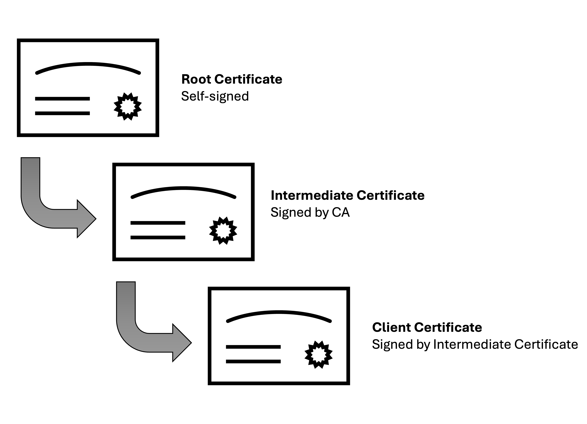

HTTPS
Glance at the URL bar at the top of this post, notice that there is a little padlock 🔒 next to the address. Next, click on the bar to bring up the address of the post and notice how the address starts with the letters: “https”.
By now, most people know that this means that the connection between your computer and the website is secure. It’s especially noticeable when a connection is not secure and a warning in your browser appears – see for examples check out this and this webpage.
In this post, I go over what this secure connection, known as https, is and how it works! Brew a cup of coffee and strap in for the most widely used cryptography ever devised...
Glossary
There are a dizzying number of acronyms that got into understanding HTTPS. Feel free to skip this, but if you’re ever lost, you can always check out their definition here.
| Term | Definition |
|---|---|
| HTTP | Hypertext Transport Protocol: A protocol that allows two devices to transfer information between one another over a network. On its own this isn’t secure. |
| HTTPS | Hypertext Transport Protocol Secure: An extension of HTTP, that uses encryption and certificates to secure a connection over a network. |
| TLS | Transport Layer Security: The actual cryptographic protocol used by HTTPS to establish a secure connection. |
| SSL | Secure Socket Layer: An outdated (deprecated) precursor to TLS. However, a lot of people still use the term, so for all intents and purposes, TLS and SSL are the same thing. |
| CA | Certificate Authority: A trusted body that issues certificates used to verify the authenticity of a server. |
| Server | A computer, device, software application, etc. that provides data. For example, a “web server” provides websites. |
| Client | A computer, device, software application, etc. that requests and receives data. Examples include browsers such as Google Chrome, Firefox or Safari. |
Overview of HTTPS
The Hypertext Transport Protocol Secure (HTTPS) is set of rules that allow you (a client) and a website (a server) to securely exchange data. The goal of HTTPS is to ensure the privacy, authenticity and integrity of communications. Let’s break down what this means:
- Privacy: This ensures that no one, except you and the device you’re communicating with, can read what is being sent. A lot of highly sensitive data is sent over the internet – addresses, credit cards, passwords, etc – so it is crucial that all messages are encrypted.
- Authenticity: This guarantees that the server you are communicating is genuinely who it claims to be. For instance, when you visit a website, you’ll want to verify that the site is indeed the legitimate source and not an imposter. Now typically, it’s only the server that needs to prove its identity, though there are scenarios where both parties authenticate each other.
- Integrity: This ensures that the data sent between the client and server remains unaltered during transmission. That is, that the message received is exactly what was sent.
There are three essential components to HTTPS to achieving these goals: the TLS handshake 🤝, certificates 🧾 and hashing functions 😵💫.
From here on out, I’ll exclusively focus on the first two, as these form the bulk of HTTPS, but for completeness a hashing function is used to generate a ‘scrambled’ version of a message that the receiving party can use to verify that the message has not been tampered with.
Ok, on to TLS...
TLS: The Key Exchange (Part One)
Imagine you want to send me a letter, but you want to make sure that no one else can read it. To keep it secure, you decide to lock the letter in a box and send it to me. However, this creates a problem – I can't open the box because I don't have the key. So, how could you send me the key? You can't just include the key with the box, because if someone intercepts the package, they could easily open the box with the key and read the letter. We could meet in-person, you hand me the key and then send me your box, but doing this with everyone you want to write letters to is unfeasible. This is the crux of the problem that the TLS handshake solves: how can two people that have never met safely agree on a key?
Let’s formalise this a little more, a letter in a box is cipher text and a key is a secret number that is used to encrypt and decrypt the message. So, the problem now becomes, how can a client and a server agree on the same number without ever publicly sharing it?
The solution lies in generating a pair of related keys called a public and private keys. As the name suggests, a public key is shared publicly and can be used by anyone to encrypt messages. However, only the private key (which is kept a secret) can be used to decrypt messages. Thus, if you want to send me a message that only I can read, you can use my public key to encrypt the message, then I can use my private key to decrypt it. This is known as asymmetric key cryptography because one key encrypts data, while the other decrypts it.
Now, to generate a pair of public and private keys, we first randomly choose a large number. This is our private key. We can then apply a one-way mathematical function to generate a second number, that becomes our public key.
A one-way function simply means that it’s very difficult to invert the process. So given a public key its extremely difficult to ascertain what the private key was that generated it. If you want more information on how these keys are created, I recommend checking out this excellent video by a YouTuber called Spanning Tree.
Relevant to our initial problem of generating a shared secret number, combining your private key and my public key results in the same number as would combining my private key with your public key.
This works because each public key is a product of a private key, and we employ one-way commutative functions to generate the shared secret key (such as modular exponentiation or elliptic curve multiplication). This process is known as a key exchange, of which the most well-known and widely used is the Diffie-Hellman Key Exchange.
TLS: That Handshake (Part Two)
Note: I am writing about Transport Layer Security version 1.3, which at the time of writing is the latest version. The TLS handshake version 1.3 can generate a secure connection with just two messages, which is an improvement over version 1.2 which requires four.
The client first generates a private/public key pair for the key exchange. It then initiates a handshake with the server it wants to connect to by sending a ClientHello message. There are several parts to this message, but the four most important bits are:
- Cipher Suites: List of encryption algorithms the client supports.
- Key Exchange Methods: List of supported key exchange mechanisms. This includes variants of Diffie-Hellman.
- Key Share: A list of public keys that the server can use for key exchange.
- A Random Number: A pseudo-random value, to ensure the uniqueness of the session.
Upon receipt of this message the server performs a few actions. First, it chooses a cipher and key exchange method from the lists sent by the client. Next, it generates its own pseudo-random value, then creates a ServerHello response message. This message is contains (in part):
- Chosen Cipher: The encryption algorithm selected from the list the client sent.
- Server’s Key Share: It’s public key so that the client can generate the shared secret key.
- A Random Number: The random value it generated used in the creation of the master key.
But before sending this to the client, the server generates a hash of both the ClientHello and ServerHello messages. It combines this hash with its private key and the client’s public key to create a master key, which is the key used to encrypt data. Since, it now can encrypt data, the server also attaches some encrypted extensions to its response; notably it includes the certificate the client can use to verify the server’s identity (more on that later).
Upon receipt of the ServerHello message, the client then combines it’s private key with the server’s public key, along with a hash of the two messages to create its personal copy of the master key. Now both the server and the client should have the same shared secret key they can use to encrypt and decrypt messages sent to one another.
Finally, along with its first encrypted message – such as a request to view the server’s homepage – the both parties attach a Finished message, which includes a cryptographic hash of the entire handshake. Both the client and server can as such verify the integrity of the handshake by comparing the received hash, along with the hash they generated, and if they are the same then each can conclude that the other party have the same session parameters.
The Certificate
The TLS handshake ensured that the connection between the client and server is private and both checked the integrity of the messages by checking the cryptographic hashes broadcast by the other party. However, the client has not yet established that the server is who they are claiming to be. For all intents and purposes, the client might have just formed a secure connection with an imposter.
This is where digital certificates are used. Earlier we saw that the client receives this as an attachment to the ServerHello message. A certificate is a kind of digital ID card. They are issued by trusted third parties, known as a Certificate Authority (CA), trusted by your browser.
Along with details on its expiration and the algorithms used to create the signature, a typical digital certificate contains the following fields:
- Subject: Information on the identity of the certificate owner, which usually is the hostname of the website (e.g. ideasin.dev).
- Issuer: Information about the Certificate Authority that issued the certificate.
- Public Key: A public key belonging to the owner of the certificate (more on that later).
- Extended Key Usage: The applications in which the certificate may be used, e.g. TLS, email protection, code signing, etc.
- Signature: A cryptographic hash of the body of the certificate combined with issuer’s private key (usually by applying the RSA signature algorithm).
A certificate may be valid for lots of domains and subdomains. Such certificates additionally contain the Subject Alternative Name (SAN) field – that displays a list of alternative domains for which the certificate is valid. Additionally, you can specify wildcards (an asterisk) so that a single certificate can be used for multiple sub-domains. For example: a wildcard certificate for *.example.com would secure the domains: www.example.com, contact.example.com, auth.example.com, etc.
When a certificate is issued, it’s often part of a hierarchical structure known as a chain of trust. This chain starts with the server's certificate and typically includes one or more intermediate certificates, ultimately ending with a root certificate.

The root CA’s certificate is self-signed and pre-installed in your operating system or browser’s trusted certificate store. Because these root certificates are inherently trusted, any certificate that chains back to one of these root certificates can also be trusted, provided that each step in the chain is valid.
To manage risk and streamline the issuance process, CAs use intermediate certificates. If an intermediate certificate is compromised, it can be revoked without affecting the root CA or other certificates in the chain. This approach also allows root CAs to delegate certificate issuance to intermediate CAs (such as Let’s Encrypt), enabling scalable and decentralised management of the process. As mentioned, there is a public key attached to the certificate. This is not the same public key used in the TLS handshake! This instead is the public key of the issuing CA that the client uses this to decrypt the digital signature on the certificate. If the decryption succeeds, the client compares the hash value it just decrypted with the hash of the actual certificate data. If these match, it proves that the certificate has not been tampered with.